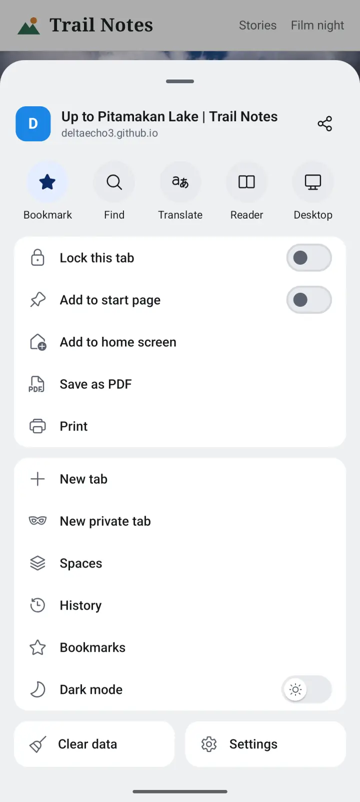
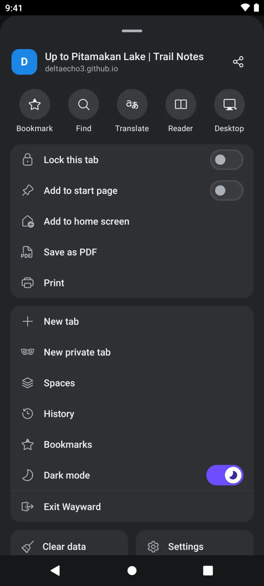
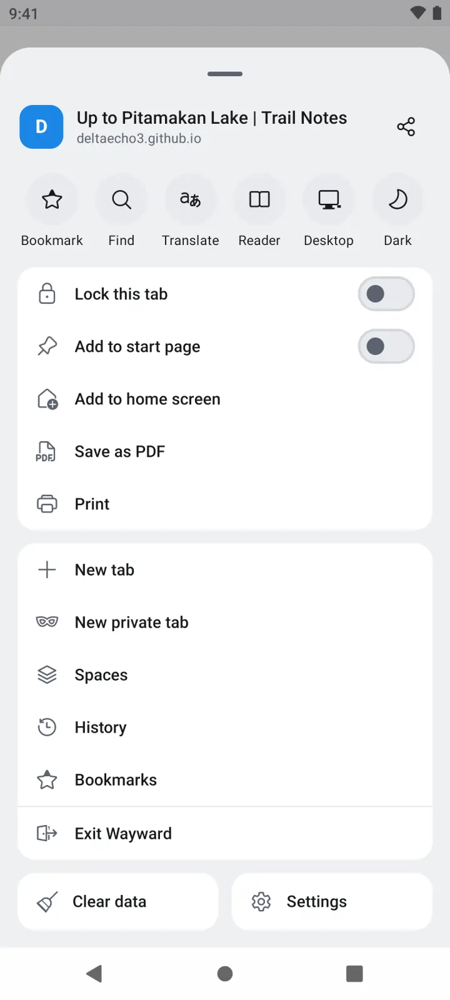
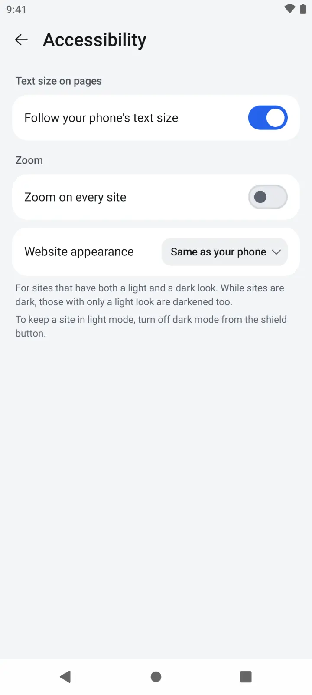

Turn on dark mode for Wayward and websites
How-to
Turn on dark mode for Wayward and websites in one tap. You can keep individual sites light.
The quick way: the menu
- Open the ⋮ menu.
- Tap Dark mode, the last row of the second card, with the sun and moon switch.


Wayward goes dark, and so do websites: the pages you have open change at once. Tap Dark mode again to make both light.
The switch works by changing two settings at once, so Settings always shows what it did:
- On: Theme becomes Dark and Website appearance becomes Dark.
- Off: Theme becomes Light and Website appearance becomes Light. If your color was Midnight, which is always dark, it goes back to Wayward's blue.
The switch shows on whenever Wayward and websites are both dark right now. With Match phone and Same as your phone, that's whenever your phone is in dark mode.
Reloading the page can lose its translation, and text you'd typed into a box on it. On a secure (https) page, text you hadn't sent yet usually comes back by itself, though not in a private tab (see text you hadn't sent yet). A locked tab, and a page in reader view, don't reload.
A Dark button in the menu's top row
Prefer a round button next to Bookmark, Find and the others? Settings > Customize, then under Menu turn on Dark mode button. It sits after Desktop, lit in Wayward's purple with a white moon while dark mode is on.

The settings behind it
- Wayward itself: Settings > Themes and app icon > Theme: Match phone, Light or Dark. Picking one there sets websites the same way the switch does: Dark makes them dark too, Light makes them light, and Match phone has both follow your phone. See Change the theme, color and app icon.
- Websites: Settings > Accessibility > Website appearance: Same as your phone, Light or Dark. Many sites have both a light and a dark look, and this picks which one they show.
- Sites with only a light look: while websites are dark, Wayward darkens them too, on your phone, with Dark Reader. It's part of dark mode, with no switch of its own. It also darkens a site that shows its light look anyway, for example one that remembers you picked Light on the site itself. Pictures and videos stay as they are.

Keep one site light
Some sites look wrong darkened. To keep one light (this switch is experimental, and may not work on every site):
- On that site, tap the blue shield in the address bar.
- Turn off Dark on this site. The page changes to its light look.

The sites you keep light are listed in Settings > Accessibility, under Website appearance, each marked Kept light. Tap Darken next to one to darken it again.
Dark on this site isn't in private tabs. Set it from a regular tab, and it applies there too.